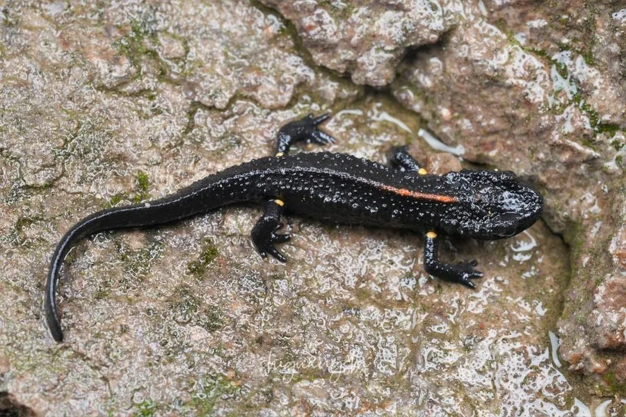

两栖动物 · 动物界
中国瘰螈 Paramesotriton chinensis

中国东南部山溪中的瘰螈，皮肤粗糙多疣，背部呈深褐色，腹部有橙红色斑块，夜间捕食水生昆虫。
- 分类
- 门脊索动物门纲两栖纲目有尾目科蝾螈科属瘰螈属
- 栖息环境
- 山地溪流、水塘和潮湿的落叶层
- 地理分布
- 中国浙江、福建、广东、广西、湖南等地
- 保护级别
- IUCN 近危（NT）；中国“三有”保护动物
物种志
中国瘰螈体长 12–15 厘米，身体粗壮，皮肤粗糙，背面呈深褐色或黑褐色，背脊和体侧有疣粒，腹部橙红色或黄褐色并带深色斑块；头部扁平，吻端钝圆，四肢短粗，尾侧扁，适合在水中活动。
它分布于中国浙江、福建、广东、广西、湖南等地，栖息于山地溪流、水塘和潮湿的落叶层中，成体以水生生活为主，白天藏在水底石缝和水草间，夜间捕食水生昆虫、螺类、小虾和蠕虫。繁殖期在 3–6 月，雌螈把卵逐粒粘在水草上，幼虫有外鳃，在水中生活数月后变态。中国瘰螈的皮肤能分泌刺激性毒素，受到威胁时会分泌黏液；它因栖息地破坏和捕捉而数量下降，中国将其列入“三有”名录。
形态与习性
- 食性水生昆虫、螺类、小虾和蠕虫
- 体长约 12–15 cm
- 繁殖3–6 月产卵，卵粘于水草，幼虫有外鳃
- 活动节律夜行性，白天藏在水底石缝中
- 毒性皮肤分泌刺激性毒素
- 识别背部深褐多疣，腹部橙红色带斑
趣味知识
- 中国瘰螈的腹部橙红，与深褐色的背部形成鲜明对比。
- 它常把卵一粒粒粘在水草上，孵化出的幼虫带着外鳃。
- 中国瘰螈是华南山溪的常见蝾螈，但捕捉和栖息地破坏使其数量下降。